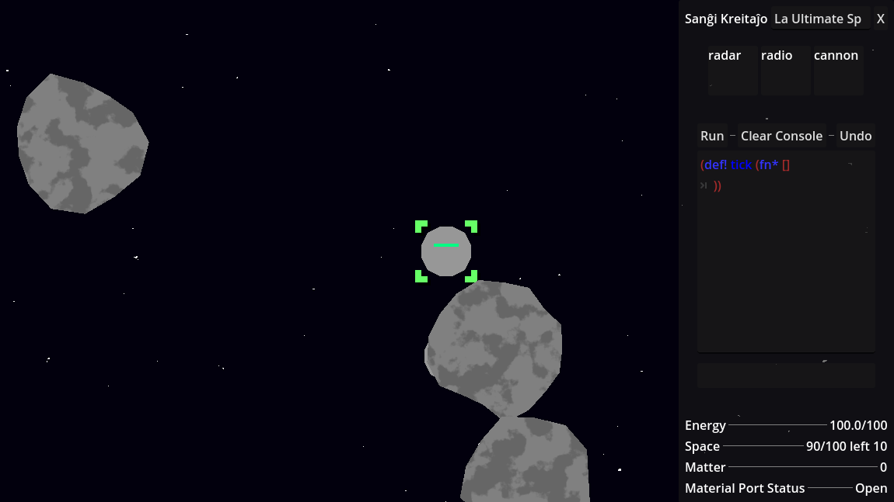

This post is much more self-indulgent than my other ones. I just wanted to talk about this game I've been working on (on and off for the past year). I don't really stick to one project consistently so progress on it has been aperiodic and sparse (which is ok, other projects need my attention too!).
It's called "etaj kreitaĵoj" which is esperanto for "little creatures". The "little creatures" in question are space probes! The goal of the game is to program little space probes and have them mine asteroids for resources.
I wanted the game to be a very "hands-off" experience. You code the probes and then you get to watch them work. You're only allowed to interact with the world through the probes. Which encourages you to automate instead of doing things manually.
A big thing I wanted for this project was emergent behaviour. A probe has a scanner that can search nearby surroundings, but the scanner can't tell the difference between an allied probe or an asteroid. Luckily, the probes can send messages to each other. It's your job as the player to code a system where probes can ping each other to verify that they are an allied probe and not an enemy or an asteroid.
Now, think for a moment, if I were an ENEMY probe what could I do with this information? Well, of course, you can hijack other probes! If you know the hand-shake you can send the right pings to them, and pretend to be an ally! You can also send no pings at all and stay completely still so you look like an asteroid. When making decisions for mechanics in this game I always choose ones that I think will lead to more emergent behaviour.
One (unimplemented) idea was for the probes to fight each other, and the winner could collect the scraps of the dead probe to attach to itself. Like a sun-tzu probe that feeds off the remains of it's enemy!
Anyway, enough talk! I'll show you what I have so far.

Let's explain. On the top-right you can see the randomly generated name of the space probe. You can change it if you want.
Below are the module slots. Modules give the space probe certain abilities (like the ability to move, or shoot) but they take up some space. You can see this probe has the following modules:
- Radar - Scan nearby surroundings
- Radio - Send messages to other probes
- Cannon - Fire a laser!
At the very bottom of the right-hand-side panel you can see Space and Matter. Matter is the game's primary resource. You get it by shooting asteroids. Matter, just like a module, takes up some space. If you run out of space you can't hold anything else. By default, the probe will immediately pickup any matter in it's vicinity, you can turn it off by changing the Material Port Status.
Now for the most important part of all. In the center of the right-hand-side panel is the script editor. That is where you can write lisp code and program the space probe. The lisp programming language you're seeing is not any lisp that you know of. It's a custom made language for this game specifically.
I was thinking about giving the player a HTTP server that interacts with the game. Then they could code in any programming language they want and any IDE they want. They just need to send HTTP requests to the game server to code the probes.
Here's an example script that moves the probe towards the nearest target in it's scanner.
(def! tick (fn* []
(move (posof (fst (scan))))))
tick- is a special name for a function that is ran every frame.scan- returns a list of ids (integers) ordered nearest-to-farthest.fst- gets the first element of a list.posof- gets the position of an object id where 0,0 is the center of the space probe.move- moves in the given direction.
I don't want to go into too much detail, but you get the idea. I try to keep the language as minimal as I can while retaining power and expressivity. It is lisp after all. Lisp is pretty good at simple but composable.
I wrote a bunch of code examples, utility functions and a list of every function in the game. I wouldn't suggest that you read any of them since you'd likely waste your time, I will never release the game, but I'll link it there anyway.
Here's a video example of me playing the game.
As you can see, it's very bare-bones. You just mine asteroids, collect matter, and recharge. There's no way to reproduce and create an army of probes. There's no way to kill space probes and steal their modules, or even swap out your existing modules (since the modules are hard-coded in!). That's exactly why I won't release the game, because it's not really a game, just a simple proof-of-concept.
But I think I can see the potential. It's already pretty fun to mess around and see these things moving! It is still very far from being final though. I'd like to rewrite almost all of the systems. It's core design and mechanics are flawed. It isn't where I want it to be. That's ok though! This is just one of many iterations.
Let's take a look at one of the previous iterations of the game. Instead of a single space probe, you have a whole space ship! The space ships are a grid of tiles and these tiles can break off of the ship.
You'll notice the look is very familiar, haha! that's because I reused a lot of the code for the space probe project.
I wanted all the controls to be diegetic. If you wanted to manually control the ship. You'd have to add a button tile that you can press and then you'd have to program "if button press then turn on this thruster" into the logic unit. The logic unit is that spinny light-show. Its like the brain of the ship and you program it to do things.
You also have a radar, reciever, thruster, laser, drill, and dynamite. I think you can guess what those things do.
You may be thinking. Wow! This game seems so much cooler than the space probe one! It's got physics and everything! And I would agree! It is much cooler! Only issue is performance. Physics is expensive and I wanted to try the idea without it, which is why I made the space probe game. Also there is no custom scripting language for this one. All the logic unit code is hard-coded into the game directly.
Here's an example of the logic unit blowing up and sending the ship into disarray!
And in this example I was messing around with the idea of making the camera itself diegetic. The camera tile gets blown up by that piece of dynamite and then you lose your vision!
Last one, it's mining an asteroid!
closing thoughts
I think in the next project I'll use a terminal-like interface instead of a script editor. I really do want to use physics but I'm still on the fence about it's performance implications because I'd like to have a whole army of probes mining resources and working together. I like the lisp language a lot but maybe I should think about using a HTTP server as a generic interface to the game. Ideally I'd want the game to be multiplayer too but that's a lot of work. I guess we'll see where it goes!